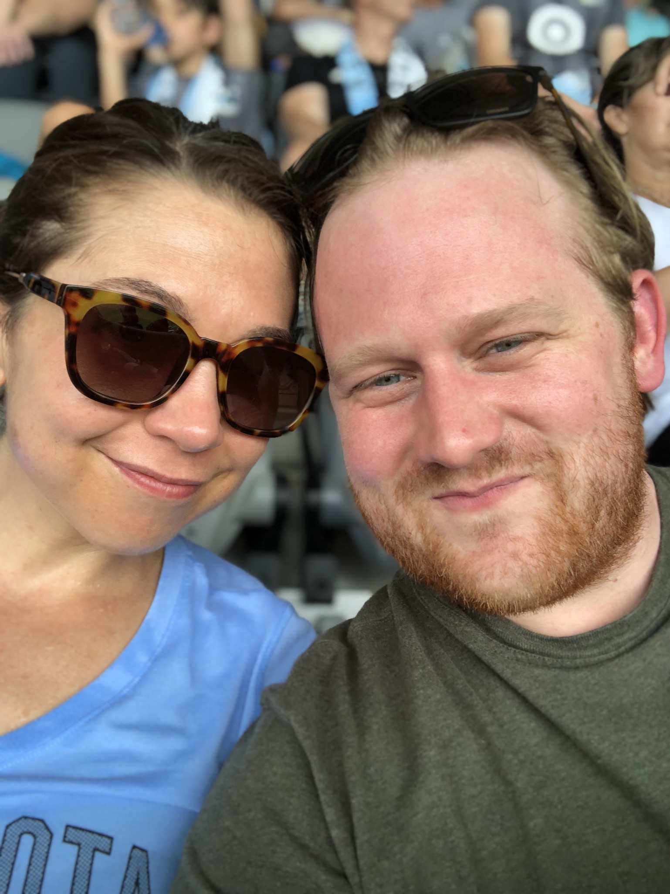

About Me
I will fill this in when I've had more time to think about what the heck to say.I will fill this in when I've had more time to think about what the heck to say.I will fill this in when I've had more time to think about what the heck to say.I will fill this in when I've had more time to think about what the heck to say.I will fill this in when I've had more time to think about what the heck to say.I will fill this in when I've had more time to think about what the heck to say.I will fill this in when I've had more time to think about what the heck to say.I will fill this in when I've had more time to think about what the heck to say.I will fill this in when I've had more time to think about what the heck to say.
I will fill this in when I've had more time to think about what the heck to say.I will fill this in when I've had more time to think about what the heck to say.I will fill this in when I've had more time to think about what the heck to say.I will fill this in when I've had more time to think about what the heck to say.I will fill this in when I've had more time to think about what the heck to say.I will fill this in when I've had more time to think about what the heck to say.I will fill this in when I've had more time to think about what the heck to say.I will fill this in when I've had more time to think about what the heck to say.I will fill this in when I've had more time to think about what the heck to say.I will fill this in when I've had more time to think about what the heck to say.I will fill this in when I've had more time to think about what the heck to say.I will fill this in when I've had more time to think about what the heck to say.I will fill this in when I've had more time to think about what the heck to say.I will fill this in when I've had more time to think about what the heck to say.I will fill this in when I've had more time to think about what the heck to say.I will fill this in when I've had more time to think about what the heck to say.I will fill this in when I've had more time to think about what the heck to say.I will fill this in when I've had more time to think about what the heck to say.I will fill this in when I've had more time to think about what the heck to say.I will fill this in when I've had more time to think about what the heck to say.I will fill this in when I've had more time to think about what the heck to say.I will fill this in when I've had more time to think about what the heck to say.I will fill this in when I've had more time to think about what the heck to say.I will fill this in when I've had more time to think about what the heck to say.I will fill this in when I've had more time to think about what the heck